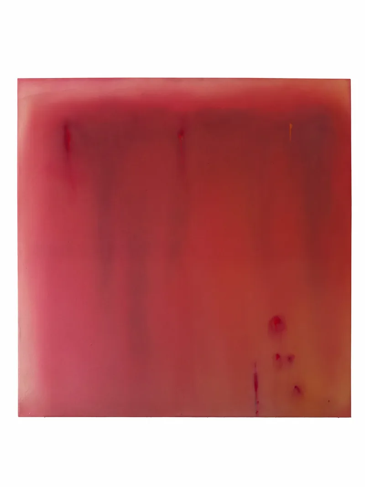
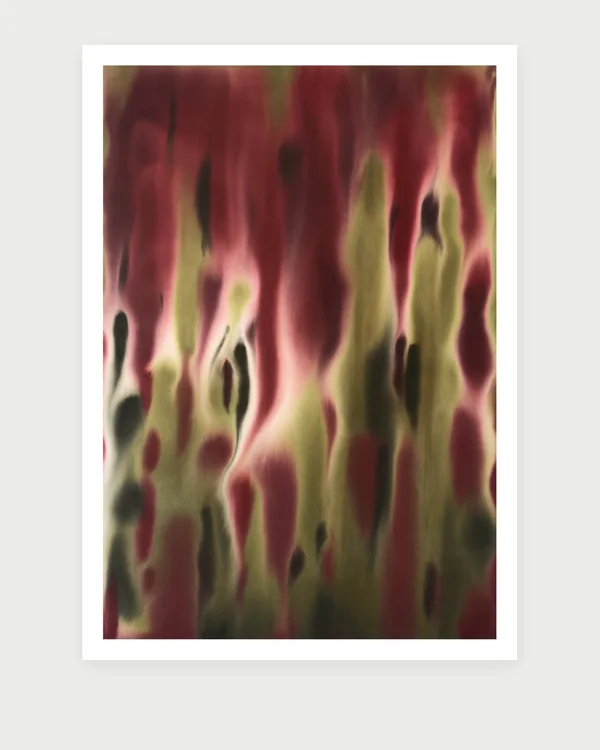

selected works

Fields of thin acrylic on raw canvas. It moves from violets and blues through green into burgundies and earthy tones; the scale runs from two-metre canvases to intimate works. It studies how color acts on the psyche before cognition catches up, and the gradient never reaches a steady state.
31 works, acrylic on raw canvas, 2025–2026.
Archival works and experiments exploring hues and colors. Earlier oils sit beside recent acrylics on raw canvas, each holding a single color as it opens.
10 works, acrylic on raw canvas and oil on canvas, 2024–2026.
Six unique studies in thin acrylic, airbrushed on cold press paper (300 g, light grain). The series runs from deep purples into crimson reds.
6 works, acrylic on cold press paper, 2026.
Limited edition prints of two paintings, giclée on fine art archival paper with a white border. Each size frames the painting a little closer.
2 prints, giclée on archival paper, A1, A2, A3.
 atmosphere
atmosphere
chromatic works on paper
works on paper
prints